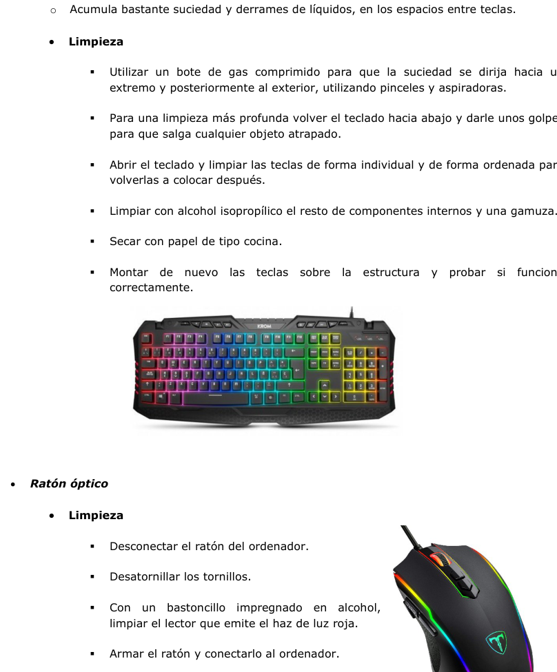
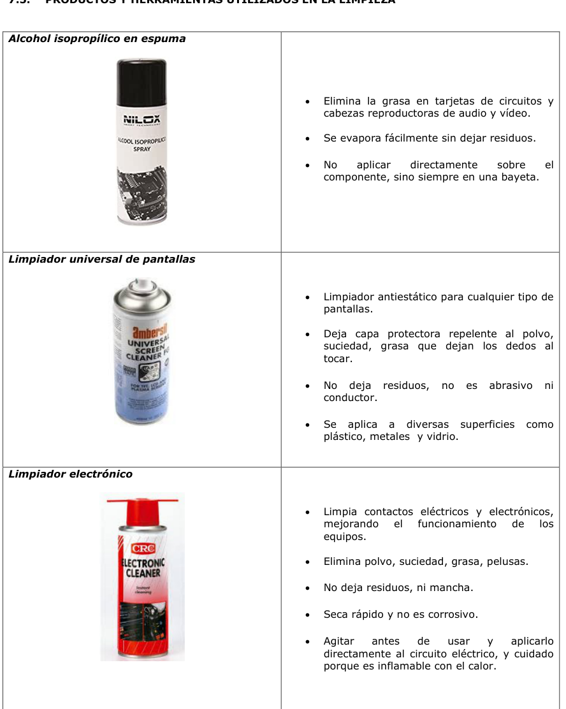

Preventivo
Se realiza antes de que aparezca la avería, siguiendo una planificación: limpieza de rejillas, revisión de ventiladores, comprobación de copias o actualizaciones.
Ejemplo: revisión trimestral de polvo y ventilación.Aprende a prevenir problemas, interpretar síntomas y elegir la prueba adecuada. Explora los contenidos y abre fichas de intervención con procedimientos, imágenes y comprobaciones.
Se realiza antes de que aparezca la avería, siguiendo una planificación: limpieza de rejillas, revisión de ventiladores, comprobación de copias o actualizaciones.
Ejemplo: revisión trimestral de polvo y ventilación.Se aplica cuando ya existe un fallo para restablecer el funcionamiento: sustituir una fuente averiada, reparar un controlador o cambiar un ventilador bloqueado.
Ejemplo: sustituir un módulo RAM defectuoso.Usa mediciones, evolución de indicadores y tendencias para anticipar posibles fallos: temperatura, registros de errores, estado SMART o vibración.
Ejemplo: planificar sustitución de un disco con señales de deterioro.Lectura complementaria: mantenimiento preventivo (IBM) · predictivo (IBM).
Consulta el procedimiento de desmontaje ya trabajado en la unidad anterior y el manual de cada modelo.
El mantenimiento también exige distinguir una avería física de una carga normal, una configuración deficiente o falta de recursos.
Polvo, mala circulación, ventiladores averiados o disipador suelto. Observar temperatura con carga y reposo y contrastar con el límite del fabricante.
Ver diagnóstico térmicoProcesos exigentes, malware, tareas en segundo plano, estrangulamiento térmico y controladores. Observar proceso, uso, frecuencia y duración.
Guía oficial de WindowsUso elevado, paginación, pestañas y aplicaciones numerosas; una RAM ocupada no implica avería. Evaluar presión de memoria y errores.
Diagnóstico de RAMPoco espacio disponible, operaciones intensivas, SSD/HDD lentos o errores del dispositivo. Distinguir porcentaje ocupado de actividad del disco.
Diagnóstico de discoCtrl + Mayús + Esc → Administrador de tareas.Busca un síntoma o filtra por categoría. Cada ficha se abre en otra página e incluye herramientas, procedimiento, riesgos y comprobación del resultado.
El equipo no enciende, se reinicia o se apaga repentinamente
Abrir diagnóstico →Se pierde la hora o aparece un aviso de configuración/CMOS
Abrir diagnóstico →Se apaga tras calentarse, baja frecuencia o se congela al trabajar
Abrir diagnóstico →No completa POST, no hay imagen o fallan varios componentes
Abrir diagnóstico →Pantallazos, errores aleatorios o fallos de POST
Abrir diagnóstico →Arranque lento, errores de lectura, disco al 100 % o ruidos de HDD
Abrir diagnóstico →Ruido, vibración, ventilación insuficiente o calentamiento
Abrir diagnóstico →No hay enlace, cortes o velocidad inferior a la esperada
Abrir diagnóstico →Pitidos, LED de diagnóstico o pantalla negra al encender
Abrir diagnóstico →Basado en las páginas 8–10 del tema, reorganizado por síntomas habituales.
Comprobar ruta del papel, bandejas y rodillos; limpieza según manual, esperar enfriamiento; evitar dispersar tóner.
Basado en UT07, págs. 8–10. Prioriza las instrucciones específicas del fabricante.
Ejecutar prueba de inyectores y limpieza desde el fabricante; revisar cartuchos y apagado correcto.
Basado en UT07, págs. 8–10. Prioriza las instrucciones específicas del fabricante.
Desconectar, retirar polvo con brocha/aire controlado, limpiar carcasa sin empapar; comprobar tecla y conexión.
Basado en UT07, págs. 8–10. Prioriza las instrucciones específicas del fabricante.
Comprobar superficie, sensor exterior, cable/puerto y alimentación; limpieza suave sin inundar electrónica.
Basado en UT07, págs. 8–10. Prioriza las instrucciones específicas del fabricante.
Comprobar alimentación, entrada de vídeo, cable y brillo; limpiar apagado con paño apropiado y producto sobre el paño.
Basado en UT07, págs. 8–10. Prioriza las instrucciones específicas del fabricante.
Limpiar cristal y banda de calibración con paño sin pelusa; revisar ajustes y conexión.
Basado en UT07, págs. 8–10. Prioriza las instrucciones específicas del fabricante.

Ilustraciones del documento original, pág. 9.
Multímetro: tensión y continuidad en condiciones seguras. Tester LAN: pares y continuidad. Tarjeta POST: códigos de arranque cuando es compatible.
Ejemplo con fuente ATX · Ejemplo LANAIDA64, herramientas del sistema, diagnóstico de memoria, SMART, comprobación de procesos y registros. EVEREST y AIDA32 aparecen en el PDF como referencias históricas.
AIDA64 · Memtest86+Brochas antiestáticas, paños sin pelusa, aire adecuado, alcohol isopropílico y limpiacontactos compatibles. Siempre siguiendo las indicaciones del fabricante.
Ver págs. 11–12 del documento.


Enlace recogido en el documento original.
Abrir vídeo en YouTubeDuración indicada en el PDF: aproximadamente 1 h 30 min.
Abrir vídeo en YouTubeiFixit · Limpieza de ordenadores · Microsoft · Rendimiento de Windows · Memtest86+
Los vídeos se enlazan tal como aparecen en el PDF; su disponibilidad y contenido pueden variar en YouTube.
Cinco preguntas autocorregibles para identificar conceptos y evitar errores habituales de diagnóstico.